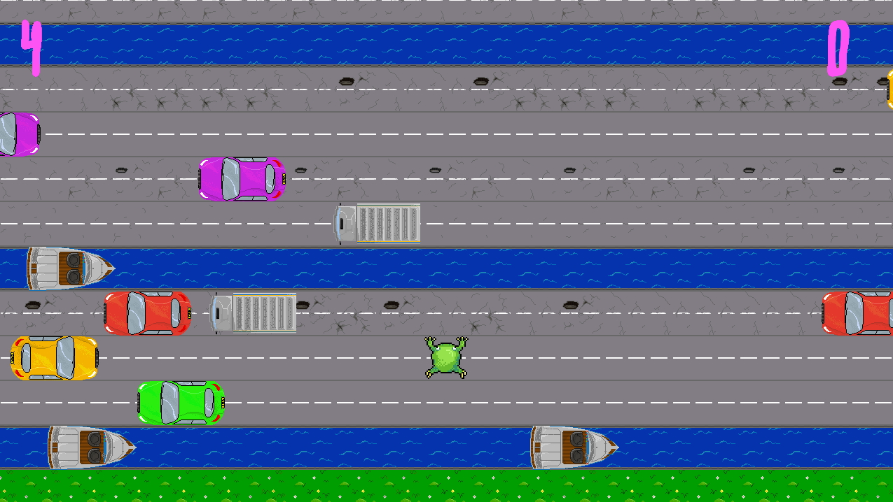

Road Toad
Road Toad is a recreation of the classic game "Frogger" made entirely in C++, with a number of changes and additions. I made it in May of 2022 (over approximately 2 weeks) using the Playbuffer framework, created by Sumo Digital.
The game displays the ground as tiles and new rows are generated whenever the player moves up the screen. The rows have random tile types and randomised sprites with differing levels of wear and tear within those types. Cars drive on the roads, boats drive on the canals, and the grass rows provide a brief respite to the player where no vehicles will drive.

The game features a diegetic menu system where cars drive out to activate the buttons after the player selects them. This includes an options menu where the sliders are shown as cars driving around on roads. I created all of the art for the game including all of the tile sprites, the car, boat and truck sprites, and of course the toad itself!

In the original Frogger, roads would either be left facing, or right facing. Cars on these roads would only move in the correct direction along these roads. For Road Toad, I wanted more chaotic gameplay, so cars will instead drive whichever way they please, and when they inevitably crash into other vehicles, they will collide realistically (or not so realistically, depending on what type of collision is enabled in the options menu!)

The game also features some extra modes that can be enabled in the options menu, such as adding impassable walls, or forcing the cars to chase straight towards you like a terrifying zombie hoard.